Step 3: Setting up a Job
Previous | Contents | Next
We have defined regions in an image and saved it as a template, now we need to set up a job to use this template.
- Click the Job tab.
- In the Job Name text field, type NEWJOB
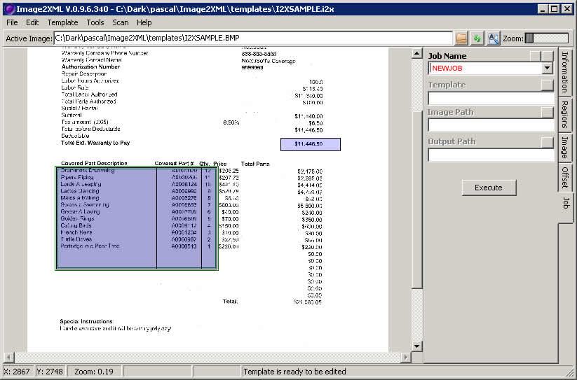
- Right click in the job template field, and select 'Set Job Template', this will set the job template of this job to the template you are currently editing.
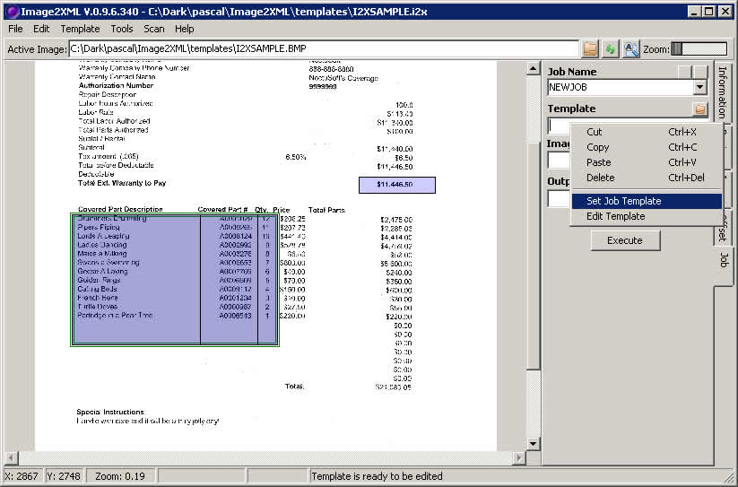
- To the right of the Image Path field, select the folder button to search for the <sample pack path>/sample/images path.
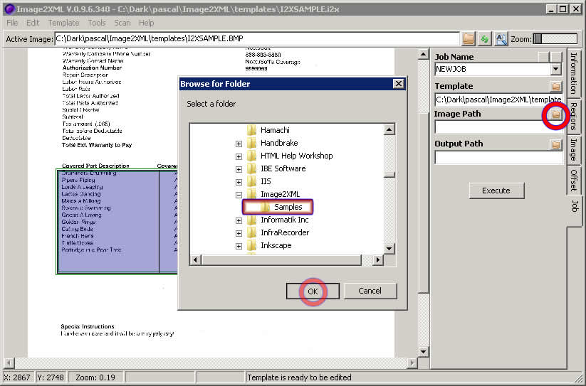
- In the output path, type OUT. By the Job Name, click the button with the picture of the disk. This will save this job.
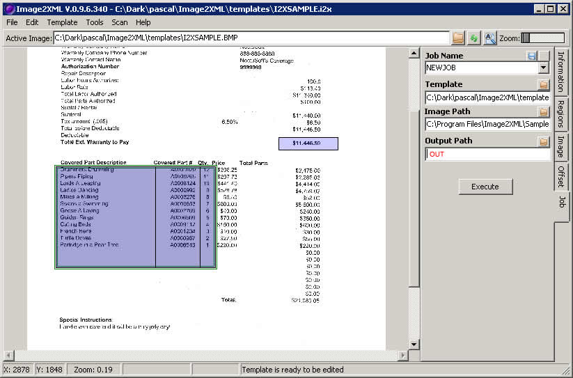
- Click Execute... you should see a command line window open up.
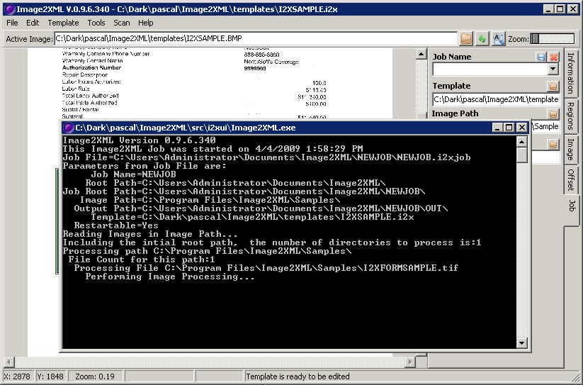
- After the command line window disappears (this should take a few minutes), right click in the Job Name field and select 'Explore'. This will open up the Job Directory in Explorer.
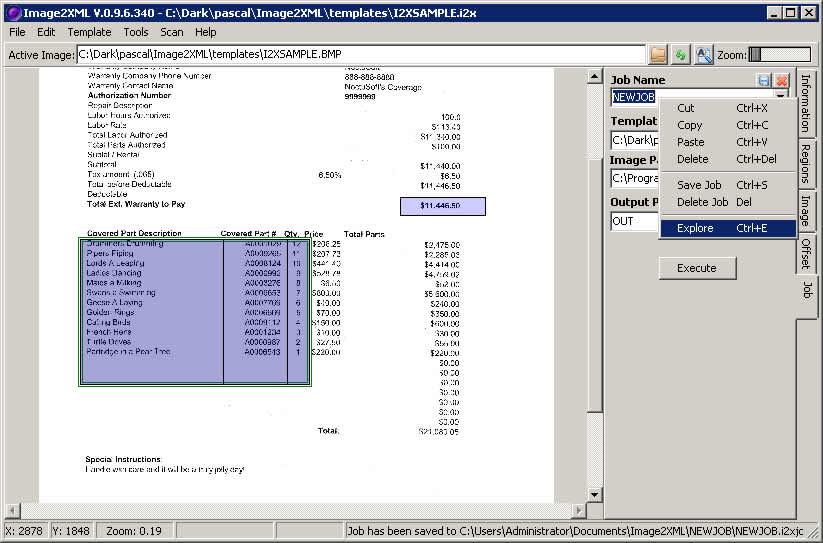
- Note in this path, you should see a NEWJOB.BAT file. When you create a schedule, this is the BAT file you will use run at some short interval. Under the OUT path, you will see the XML generated by this run.
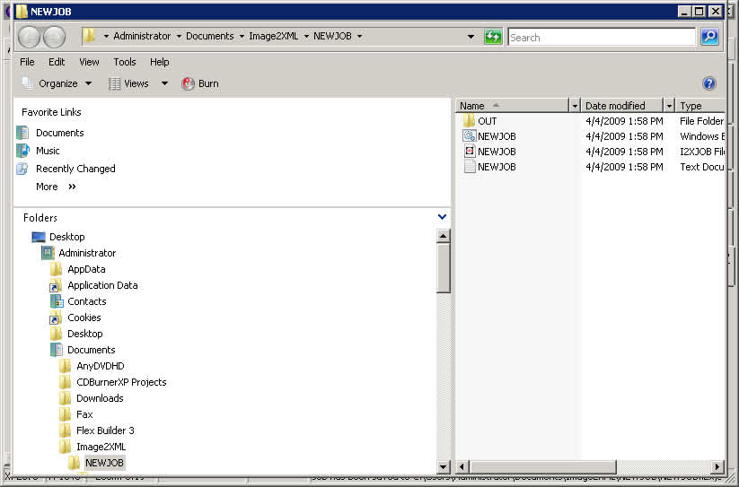
- Go to Control Panel->Task Scheduler (on Vista) or Control Panel-> on vista.
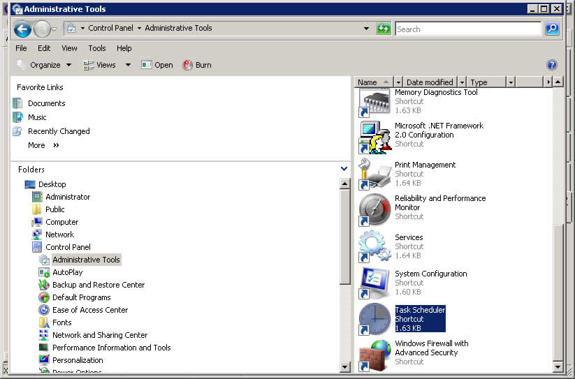
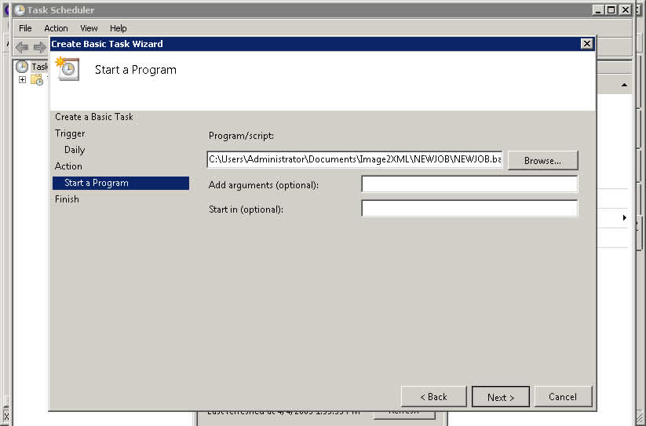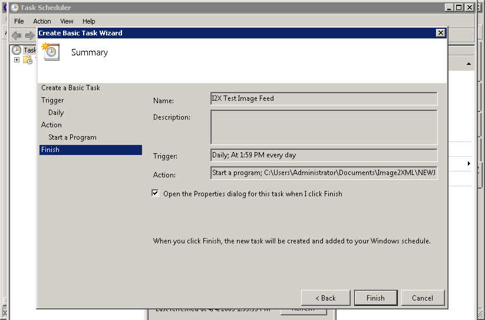
- VISTA: Create a new Task, and set it to run every 2 minutes for 1 hour. Set this module to execute to the NEWJOB.bat. Enable this job.
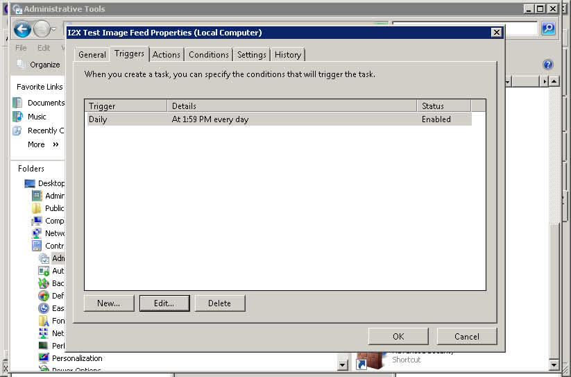
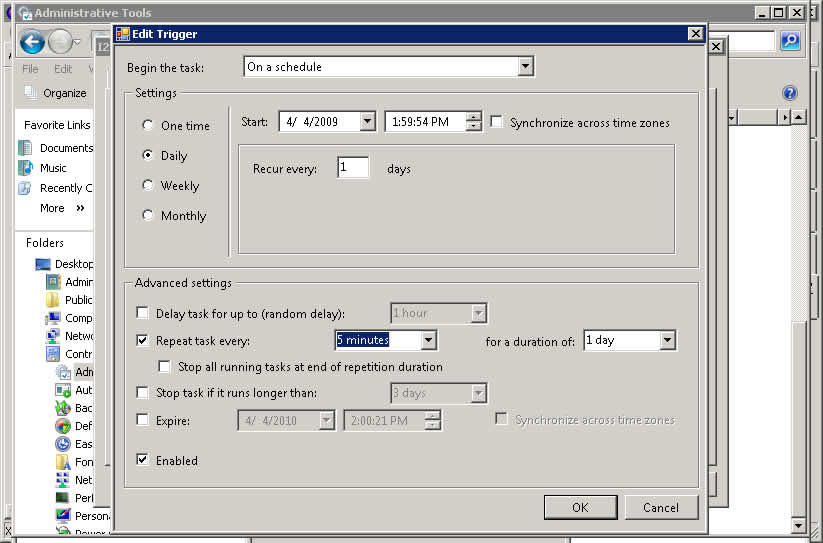
- XP: Create a new Task, and set it to run every 2 minutes for 1 hour. Set this module to execute to the NEWJOB.bat. Enable this job.
Previous | Contents | Next
Copyright © 2009, NoctuSoft, Inc.
This help file has been generated by the freeware version of HelpNDoc